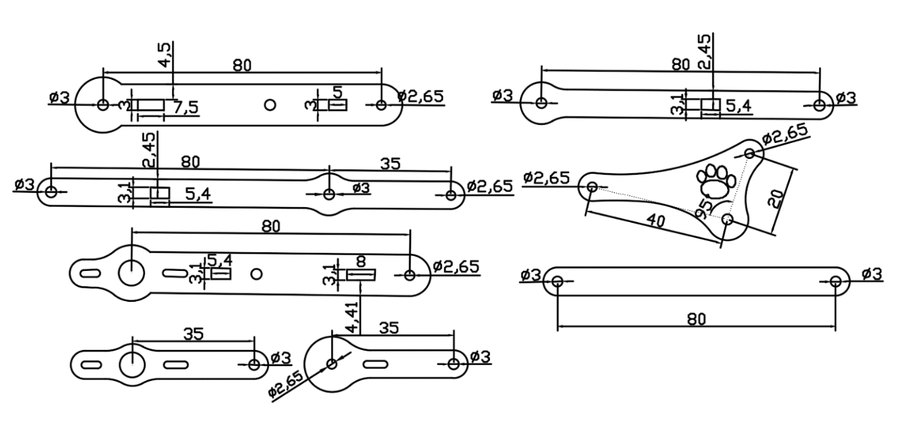

About <<
Previous Next >> CAD1 繪圖
HW1
HW1 佔學期成績 25%
HW1 必須在 2021.11.10 22:00 之前完成.
HW1 具體項目成果回報區將於 2021.09.23 開啟, 於 2021.11.10 22:00 關閉.
作業一: meArm Robot 零件繪圖與機電運動模擬場景製作
Step1: 下載 meARM.7z 這個包含尚未完成組立的 meArm Robot 場景與雷射切割零件組立手冊.
meArm_75-0040_v1.pdf 則是另外一本組立參考手冊.
Step2: 從課程網頁中的 Compile CoppeliaSim 頁面, 下載 coppeliaSim 4.1.0 官方版與 MSYS2 編譯版.7z (檔案大小 412 MB, 解開壓縮後 1GB) 可攜套件.
Step3: 在 HW1 中, 要求每一位學員透過程式亂數分配 (兩班實際亂數分配結果以上課時點擊下列按鈕所得結果為準) 所使用的兩套參數式 CAD 套件, 從軟體發展緣起開始進行介紹, 經過教育版軟體套件檔案的取得, 下載安裝以及配置使用. 根據 Step1 中的零件尺寸, 逐一完成 meArm Robot 各零件繪製與組立. 並將零件匯入 CoppeliaSim 進行組裝配置後, 以 UI 介面中的 slider 控制 meArm Robot 各軸的旋轉作動.
2b CAD 套件分配結果: https://mde.tw/cad2021/downloads/online/2b_hw1_cad.txt
附件:
1. CAD 套件分配表:
sw: Solidworks, inv: Inventor, nx: NX12, ons: Onshape, slvs: Solvespace
2a 套件亂數分配結果
2b 套件亂數分配結果
2. 在兩套 CAD 完成零件繪圖並轉入 CoppeliaSim 後, 為了建立 Dynamic Model 必須利用 shape edit modes 轉為 clean model, 並與實際轉入的 STL 格式零件外形結合應用後建立模擬場景 (scenes).
3. meARM Robot 動態模擬場景的建構, 可參考 0, 1, 2, 3, 4, 5, 6, 7, 也可參考 Uarm Robot model 與相關影片.
4. CoppeliaSim design dynamic simulations 說明頁面.
5. 網際 Lua 程式執行.
6. meArm.slvs, meArm_in_solvespace.slvs
7. UI 介面程式參考:
function closeEventHandler(h)
sim.addLog(sim.verbosity_scriptinfos,'Window '..h..' is closing...')
simUI.hide(h)
end
function joint1_rotate(ui,id,newVal)
simUI.setLabelText(ui,3000,'theta1 set to '..newVal)
sim.setJointTargetPosition(joint1, newVal*deg)
end
function joint2_rotate(ui,id,newVal)
simUI.setLabelText(ui,3000,'theta2 set to '..newVal)
sim.setJointTargetPosition(joint2, newVal*deg)
end
function joint3_rotate(ui,id,newVal)
simUI.setLabelText(ui,3000,'theta3 set to '..newVal)
sim.setJointTargetPosition(joint3, newVal*deg)
end
function joint16_rotate(ui,id,newVal)
simUI.setLabelText(ui,3000,'theta16 set to '..newVal)
sim.setJointTargetPosition(joint16, newVal*deg)
sim.setJointTargetPosition(joint20, -newVal*deg)
end
function sysCall_init()
-- do some initialization here
joint1 = sim.getObjectHandle('motor1')
joint2 = sim.getObjectHandle('motor2')
joint3 = sim.getObjectHandle('motor3')
joint16 = sim.getObjectHandle('motor16')
joint20 = sim.getObjectHandle('motor20')
i = 0
deg = math.pi/180
print(i)
xml = [[
<ui closeable="true" on-close="closeEventHandler" resizable="true">
<label text="This is a demo of the CustomUI plugin. Browse through the tabs below to explore all the widgets that can be created with the plugin." wordwrap="true" />
<tabs>
<tab title="Numeric">a
<label text="Sliders can be oriented horizontally or vertically, and have optional properties that can be set (in the XML) such as minimum and maximum value." wordwrap="true" />
<label text="" id="3000" wordwrap="true" />
<label text="theta1" /> <hslider tick-position="above" tick-interval="1"
minimum="0" maximum="360" on-change="joint1_rotate" />
<label text="theta2" /> <hslider tick-position="above" tick-interval="1"
minimum="-90" maximum="65" on-change="joint2_rotate" />
<label text="theta3" /> <hslider tick-position="above" tick-interval="1"
minimum="-90" maximum="185" on-change="joint3_rotate" />
<label text="theta16" /> <hslider tick-position="above" tick-interval="1"
minimum="0" maximum="15" on-change="joint16_rotate" />
</tab>
</tabs>
</ui>
]]
ui=simUI.create(xml)
end

(From: 2016_ADDITIVE MANUFACTURING PROCESSES FOR FABRICATING A MINI ROBOT - COMPUTATIONAL MODELS AND EXPERIMENTAL RESULTS.pdf)
About <<
Previous Next >> CAD1 繪圖